x와 -x 중 선택한 값의 0 비교를 줄이기
선택 조건을 분석하지 않고도 equality 비교가 원래 x의 0 여부와 같다는 점을 사용한다.
Issue85250_.pdf의 전체 내용입니다. 설명·코드·표·검증 기록을 생략하지 않고 옮겼습니다. 그림 안의 문자 인식 결과에는 기호 오류가 있을 수 있어 이미지도 함께 제공합니다.
이 문서의 목차
❓ / [Issue #85250] Missed FP Fold ,(x ≥ 0 ? x : -x / == 0) ⇒ x == 0
❓
[Issue #85250] Missed FP Fold , (x ≥ 0 ? x : -x
== 0) ⇒ x == 0
Category | Issue PR Task 분석 |
|---|---|
URL | https://github.com/llvm/llvm-project/issues/85250 |
날짜 | July 19, 2026 |
선택한 Issue
이슈 정보
missed FP fold, (x ≥ 0)? x : -x ==0 ⇒ x == 0FP
직관적인 이해
왜 InstCombine 문제인가?
핵심 패턴 및 src/tgt IR
기존 code와 fold한 code
src
%1 = fcmp oge float %0, 0.000000e+00%2 = fneg float %0%3 = select i1 %1, float %0, float %2%4 = fcmp oeq float %3, 0.000000e+00ret i1 %4tgt
패턴
Alive2 검증 & Compiler Explorer
Alive2
Compiler Explorer
src Assembly
tgt Assembly
로컬 성능 평가
4.1 X86 Assembly
Assembly diff
X86 llvm-mca 실행
lvm-mca
4.2 AArch64 Assembly
4.3 RISCV Assembly
결과
실제 merged patch
초기 변환 방식
리뷰에서 발견된 문제
해결법
테스트 패치
[Issue #85250] Missed FP Fold , (x ≥ 0 ? x : -x == 0) ⇒ x == 0 1
이 페이지에 연결된 자료
페이지 배치·기호·도식 확인하기

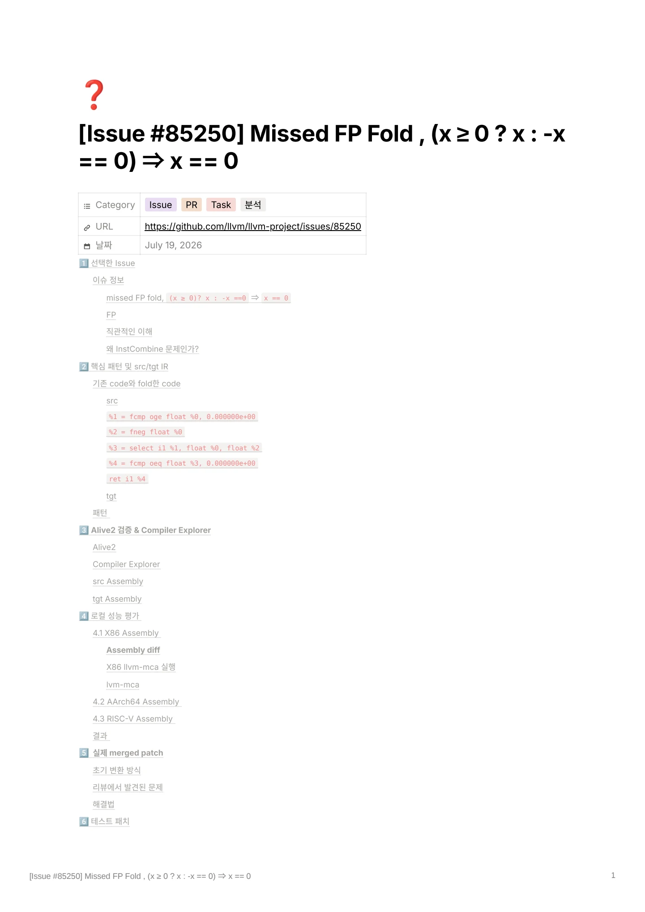
1️⃣ 선택한 Issue / 이슈 정보 / 항목 내용
기본 테스트
predicate별 테스트
scalar와 vector 테스트
select 조건은 중요하지 않다는 테스트
0.0 테스트 추가
denormal 0에 아주 가까운 수 ) 설정 테스트
Fast-Math Flags 테스트
선택한 Issue
이슈 정보
항목 | 내용 |
|---|---|
Issue | |
상태 | Closed |
Labels | |
연결 PR | |
PR 상태 | Merged, 20240420 |
구현 파일 | |
테스트 파일 | |
missed FP fold, (x ≥ 0)? x : -x ==0 ⇒ x == 0→ 부동소수점(Floating Point)에 대해 가능한 fold(최적화)를 놓쳤다
FP
LLVM에서는 Integer와 Floating Point의 규칙이 다르다.
부동소수점에는 NaN, +0.0, 0.0, Infinity같은 특별한 값들이 있기 때문에 최적화를 조심해야 함.
✅ missed integer fold, missed FP fold 처럼 구분해서 적음
직관적인 이해
(x >= 0) ? x : -x == 0 는 fabs(x) == 0 와 같은 의미→ 그런데 최종 비교는 그 값이 0인지 확인하는 것이다.
→ x와 -x는 부호는 다르지만 0인지 여부는 같다.
→ 따라서 x == 0으로 바꿀 수 있다.
왜 InstCombine 문제인가? 이 이슈는 CFG를 바꾸거나 특정 target의 assembly instruction을 직접 선택하는 문제가 아니다.
fcmp → fneg → select → fcmp[Issue #85250] Missed FP Fold , (x ≥ 0 ? x : -x == 0) ⇒ x == 0 2
페이지 배치·기호·도식 확인하기

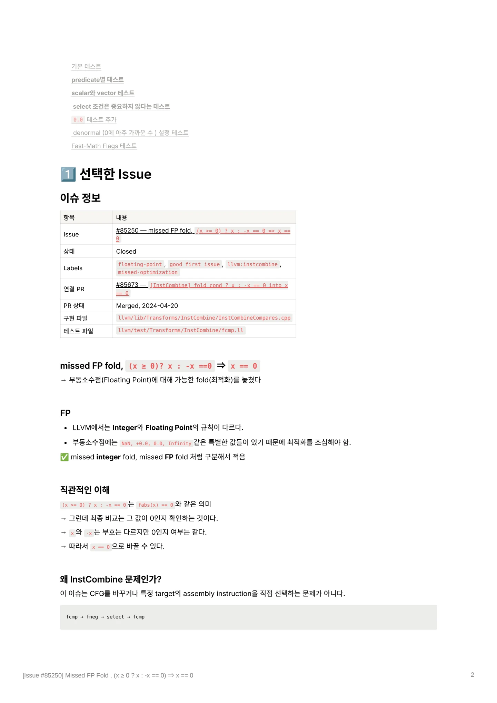
형태의 LLVM IR instruction 조합을 / fcmp / 하나로 단순화하는 문제이므로 InstCombine에 해당한다.
형태의 LLVM IR instruction 조합을
fcmp하나로 단순화하는 문제이므로 InstCombine에 해당한다.
핵심 패턴 및 src/tgt IR
기존 code와 fold한 code
define i1 @src(float %0) {
entry:
%1 = fcmp oge float %0, 0.000000e+00
%2 = fneg float %0
%3 = select i1 %1, float %0, float %2
%4 = fcmp oeq float %3, 0.000000e+00
ret i1 %4
}define i1 @tgt(float %0) {
entry:
%oeq = fcmp oeq float %0, 0.000000e+00
ret i1 %oeq
}src
%1 = fcmp oge float %0, 0.000000e+00fcmp oge = Ordered Greater or Equal = x >= 0
입력 %0이 0.000000e+00보다 크거나 같은지 비교하고 결과를 %1에 저장한다.
%1 의 타입은 i1 , 즉 boolean이다.
%2 = fneg float %0fneg 는 floating-point 값의 부호를 뒤집는다.
즉 %0의 부호를 반전한 값을 %2에 저장한다.
%3 = select i1 %1, float %0, float %2
select = 삼항 연산자 = (condition) ? A : B%1 이 true면 %0 , false면 %2 , 즉 %0 을 선택한다.
%4 = fcmp oeq float %3, 0.000000e+00%3이 0인지 비교한다.
즉 절댓값과 비슷한 결과가 0인지 확인한다.
ret i1 %4최종 비교 결과를 반환한다.
tgt
[Issue #85250] Missed FP Fold , (x ≥ 0 ? x : -x == 0) ⇒ x == 0 3
페이지 배치·기호·도식 확인하기

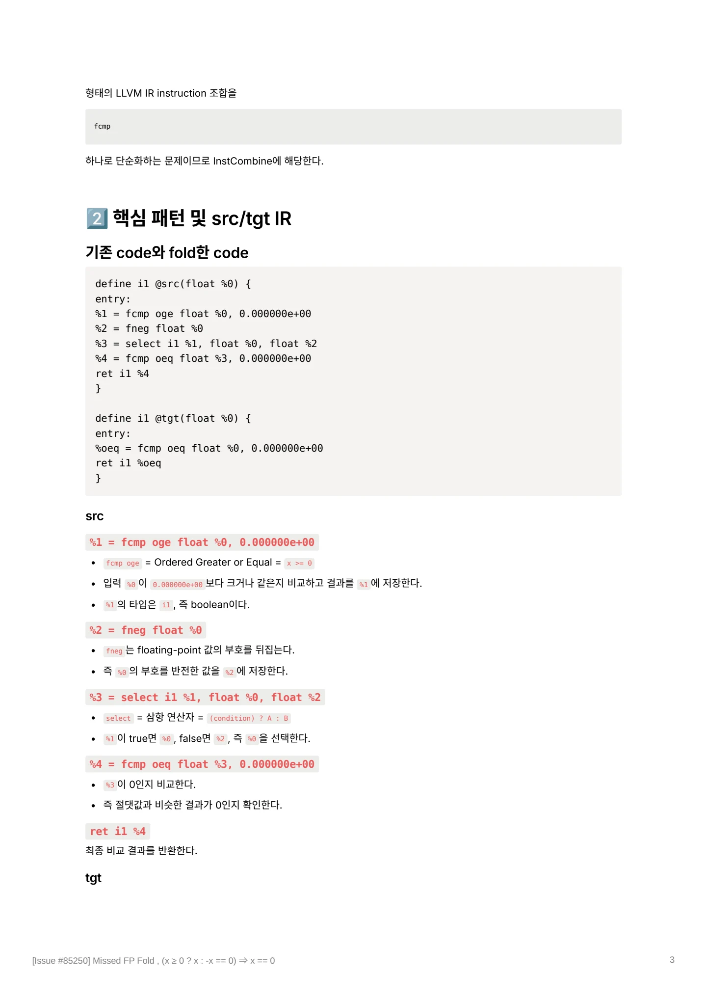
%oeq = fcmp oeq float %0, 0.000000e+00 / ret i1 %oeq / 즉 다음과 같다.
%oeq = fcmp oeq float %0, 0.000000e+00
ret i1 %oeq즉 다음과 같다.
return x == 0;패턴
fcmp oge
↓
fneg
↓
select
↓
fcmp oeq 0fcmp oeq x, 0일반화하면 다음 패턴이다.
fcmp eq (select cond, x, -x), 0fcmp eq x, 0"절댓값을 만든 뒤 0과 비교하는 패턴"을 "원래 값이 0인지 비교하는 패턴" 으로 단순화가 가능하다.
실제 패치가 처리하는 predicate는 다음 네 가지다.
uequne
oeqone“X와 X 중 하나를 선택한 뒤 0과 비교하는 패턴”을 원래 값 X가 0인지 비교하는 패턴”으로 단순화한다.
Alive2 검증 & Compiler Explorer
Alive2
src와 tgt가 LLVM IR 의미상 동일한지 먼저 확인한다.
Issue Alive2: https://alive2.llvm.org/ce/z/NFEKjp
PR Alive2: https://alive2.llvm.org/ce/z/7DMRCy
Transformation seems to be correct! 의 결과가 나오는 것을 확인했다.[Issue #85250] Missed FP Fold , (x ≥ 0 ? x : -x == 0) ⇒ x == 0 4
페이지 배치·기호·도식 확인하기

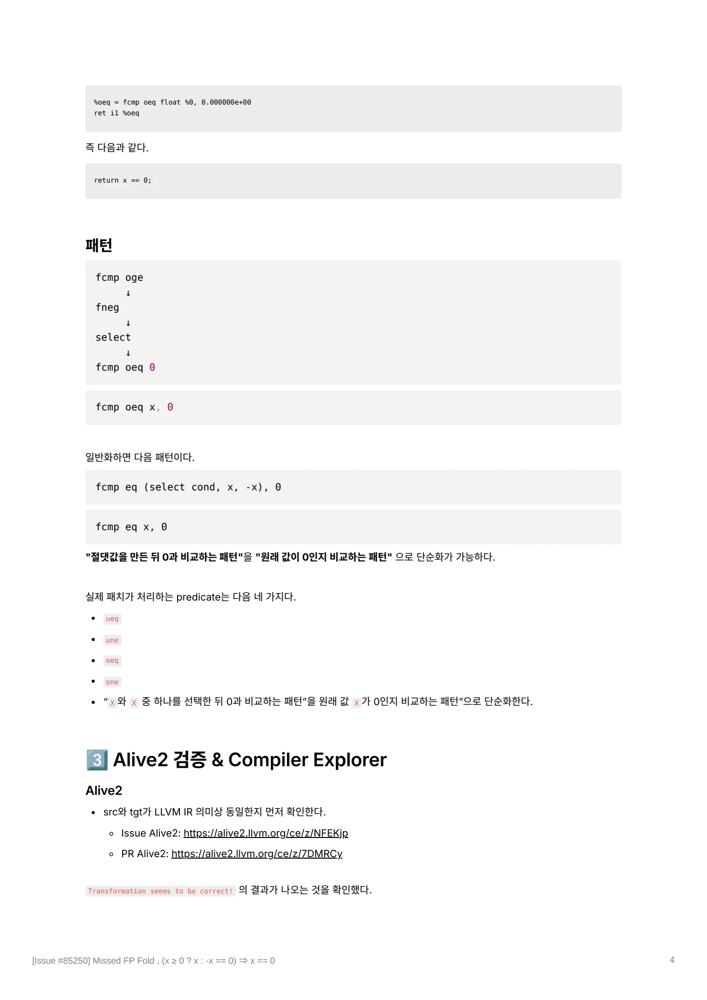
Compiler Explorer / 이 단계에서는 다음을 분리해서 본다. / 1. IR이 짧아지는가?
Compiler Explorer
이 단계에서는 다음을 분리해서 본다.
IR이 짧아지는가?
실제 codegen에서도 더 나은 형태가 되는가?
clang 12.0.1 버전으로 확인했고 아래 링크에 가보면 아래와 같은 Assembly 결과를 확인할 수 있다.
https://godbolt.org/z/K6EEbb13b
src Assembly
.LCPI0_0:
.long 0x80000000
.long 0x80000000
.long 0x80000000
.long 0x80000000
src:
movaps xmm1, xmmword ptr [rip + .LCPI0_0]
xorps xmm1, xmm0
xorps xmm2, xmm2
xorps xmm3, xmm3
cmpless xmm3, xmm0
andps xmm0, xmm3
andnps xmm3, xmm1
orps xmm3, xmm0
cmpeqss xmm3, xmm2
movd eax, xmm3
and eax, 1
rettgt Assembly
tgt:
xorps xmm1, xmm1
cmpeqss xmm1, xmm0
movd eax, xmm1
and eax, 1
ret[Issue #85250] Missed FP Fold , (x ≥ 0 ? x : -x == 0) ⇒ x == 0 5

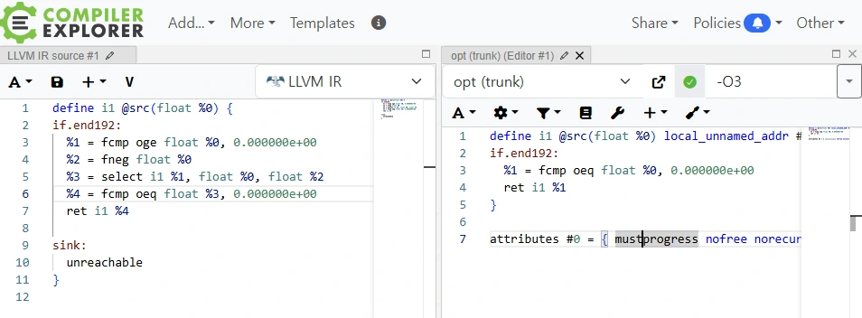
그림 안의 텍스트 · 문자 인식
E EXPLORER Add..• More - Templates O Share- Policies ④ - Other- ㅁ oa(unt (Gats m) >X opt (trunk ₩503 define i1 gsrc(float te) Tocal_unnaned_addr 1 1 T atirioutes To - & musprogress notree norecy
이미지에서 읽은 문자입니다. 코드 기호는 그림에서 확인하세요.
이 페이지에 연결된 자료
페이지 배치·기호·도식 확인하기

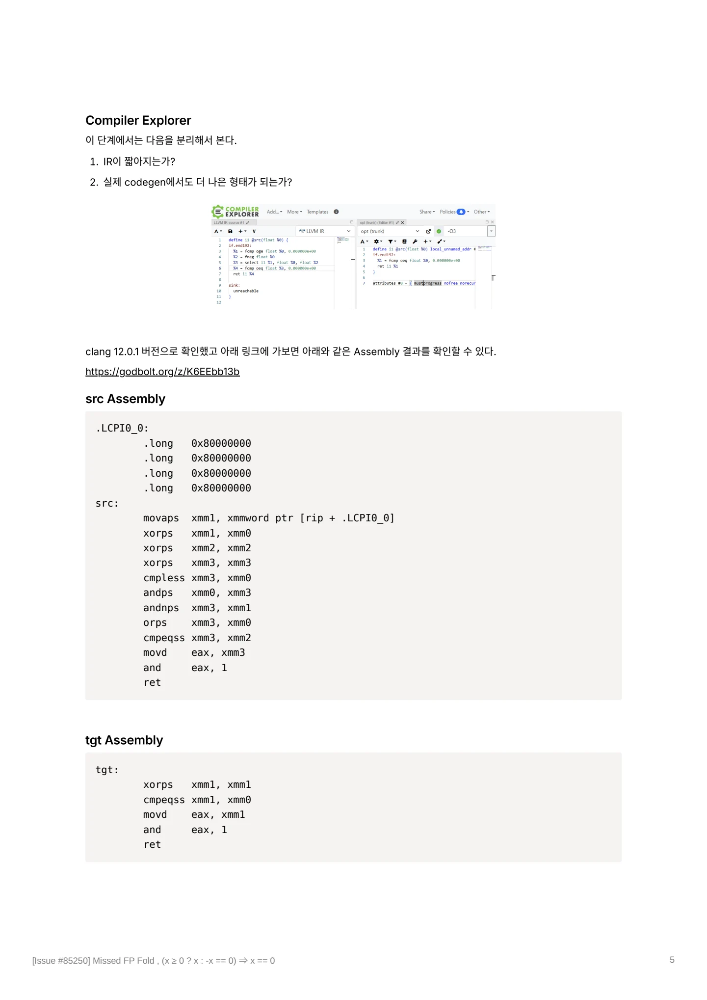
/ 로컬 성능 평가 / llvm-project > oss 라는 폴더를 만든다.
로컬 성능 평가
llvm-project > oss 라는 폴더를 만든다.
src.ll 과 tgt.ll 을 각각 생성한다.
4.1 X86 Assembly
C:\llvm-project\build\bin\llc.exe `
-O2 `
-mtriple=x86_64-pc-windows-msvc `
-mcpu=x86-64-v3 `
src.ll `
-o x86-src.sC:\llvm-project\build\bin\llc.exe `
-O2 `
-mtriple=x86_64-pc-windows-msvc `
-mcpu=x86-64-v3 `
tgt.ll `
-o x86-tgt.s원본과 최적화 코드의 Assembly를 각각 생성한다.
llc 는 .ll 을 지정한 target의 Assembly로 변환하는 LLVM 도구다.
Assembly diff
>> git diff --no-index -- x86-src.s x86-tgt.s
diff --git a/x86-src.s b/x86-tgt.s
index ef1de188a..38f030277 100644
--- a/x86-src.s
+++ b/x86-tgt.s
@@ -5,25 +5,16 @@
.globl @feat.00
@feat.00 = 0
.att_syntax
- .file "src.ll"
+ .file "tgt.ll"^M
.def test;
.scl 2;
.type 32;
.endef
- .globl __real@80000000 # -- Begin function test
- .section .rdata,"dr",discard,__real@80000000
- .p2align 2, 0x0
-__real@80000000:
- .long 0x80000000 # float -0
.text
- .globl test
+ .globl test # -- Begin function test^M
.p2align 4
test: # @test[Issue #85250] Missed FP Fold , (x ≥ 0 ? x : -x == 0) ⇒ x == 0 6
페이지 배치·기호·도식 확인하기

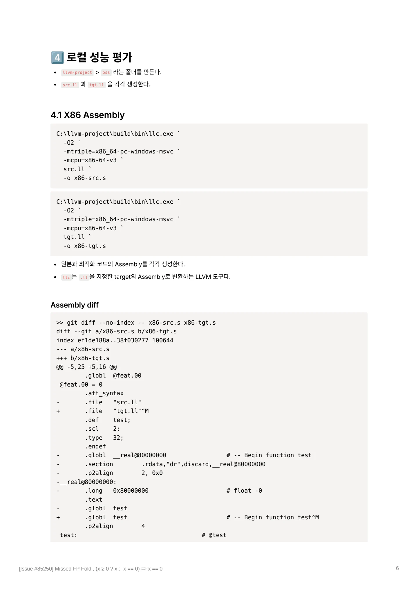
# %bb.0: # %entry / - vbroadcastss __real@80000000(%rip), %xmm1 # xmm1 = [-0.0E+0,-0.0E+0,-0.0E+ / 0,-0.0E+0]
# %bb.0: # %entry
- vbroadcastss __real@80000000(%rip), %xmm1 # xmm1 = [-0.0E+0,-0.0E+0,-0.0E+
0,-0.0E+0]
- vxorps %xmm1, %xmm0, %xmm1
- vcmpless %xmm0, %xmm1, %xmm2
- vblendvps %xmm2, %xmm0, %xmm1, %xmm0x86에서는 -x 생성과 조건 선택에 사용되던 다음 instruction들이 제거되었다.
vbroadcastssvxorpsvcmplessvblendvps원본 기록에서는 핵심 instruction을 8개 → 4개로 세었고, 아래 llvm-mca 결과에서는 반복당 9개 → 5개로 집계된다. 성능 비교 표에서는 llvm-mca의 수치를 기준으로 사용한다.
X86 llvm-mca 실행
C:\llvm-project\build\bin\llvm-mca.exe `
-mtriple=x86_64-pc-windows-msvc `
-mcpu=x86-64-v3 `
-iterations=1000 `
x86-src.s |
Tee-Object -FilePath x86-src-mca.txtC:\llvm-project\build\bin\llvm-mca.exe `
-mtriple=x86_64-pc-windows-msvc `
-mcpu=x86-64-v3 `
-iterations=1000 `
x86-tgt.s |
Tee-Object -FilePath x86-tgt-mca.txtlvm-mca
실제 CPU에서 프로그램을 실행하는 도구가 아니라 LLVM scheduling model을 이용한 정적 성능 추정 도구다.
결과의 정확도는 해당 CPU scheduling model의 품질에 영향을 받는다.
src 결과
X86 llvm-mca, x86-64-v3, 1000 iterations
Iterations: 1000
Instructions: 9000
Total Cycles: 9011
Total uOps: 12000Dispatch Width: 4
uOps Per Cycle: 1.33
IPC: 1.00
Block RThroughput: 3.0tgt 결과
Iterations: 1000
Instructions: 5000[Issue #85250] Missed FP Fold , (x ≥ 0 ? x : -x == 0) ⇒ x == 0 7
페이지 배치·기호·도식 확인하기

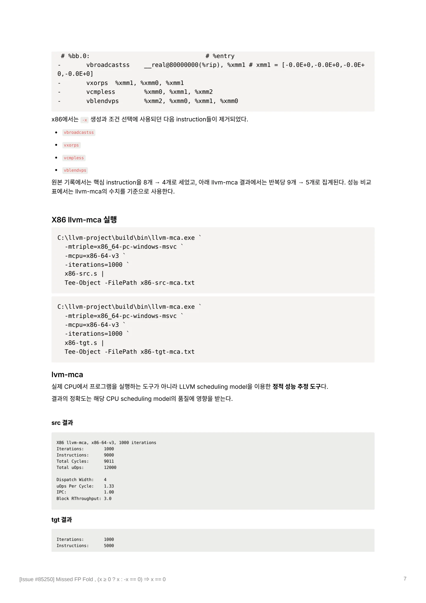
Total Cycles: 3005 / Total uOps: 7000 / Dispatch Width: 4
Total Cycles: 3005
Total uOps: 7000Dispatch Width: 4
uOps Per Cycle: 2.33
IPC: 1.66
Block RThroughput: 1.8 Total uOps , Total Cycles , Block RThroughput 을 비교할 수 있다.특히 Block RThroughput은 낮을수록 더 좋은 처리량을 의미한다.
4.2 AArch64 Assembly
C:\llvm-project\build\bin\llc.exe `
-O2 `
-mtriple=aarch64-unknown-linux-gnu `
-mcpu=neoverse-v2 `
src.ll `
-o aarch64-src.sC:\llvm-project\build\bin\llc.exe `
-O2 `
-mtriple=aarch64-unknown-linux-gnu `
-mcpu=neoverse-v2 `
tgt.ll `
-o aarch64-tgt.s>> git diff --no-index -- aarch64-src.s aarch64-tgt.s
diff --git a/aarch64-src.s b/aarch64-tgt.s
index 47f9ac8d3..48e6016b8 100644
--- a/aarch64-src.s
+++ b/aarch64-tgt.s
@@ -1,4 +1,4 @@
- .file "src.ll"
+ .file "tgt.ll"^M
.text
.globl test // -- Begin function test
.p2align 2
@@ -7,9 +7,6 @@
test: // @test
.cfi_startproc
// %bb.0: // %entry
- fneg s1, s0
- fcmp s0, #0.0
- fcsel s0, s0, s1, ge
fcmp s0, #0.0
cset w0, eq
ret제거된 instruction:
fneg첫 번째 fcmp
[Issue #85250] Missed FP Fold , (x ≥ 0 ? x : -x == 0) ⇒ x == 0 8
페이지 배치·기호·도식 확인하기

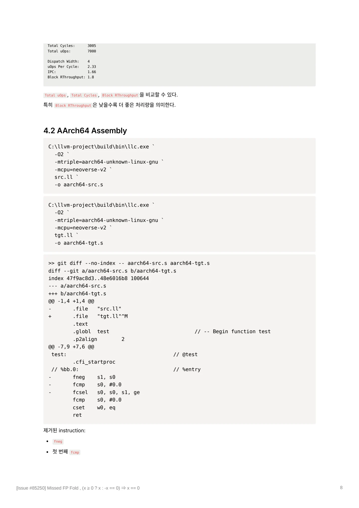
fcsel / 핵심 연산만 세면 5개 → 2개이고, ret 까지 포함하면 6개 → 3개다. / 4.3 RISC-V Assembly
fcsel핵심 연산만 세면 5개 → 2개이고, ret까지 포함하면 6개 → 3개다.
4.3 RISC-V Assembly
C:\llvm-project\build\bin\llc.exe `
-O2 `
-mtriple=riscv64-unknown-linux-gnu `
-mattr="+m,+a,+f,+d,+c" `
src.ll `
-o riscv-src.sC:\llvm-project\build\bin\llc.exe `
-O2 `
-mtriple=riscv64-unknown-linux-gnu `
-mattr="+m,+a,+f,+d,+c" `
tgt.ll `
-o riscv-tgt.s>> git diff --no-index -- riscv-src.s riscv-tgt.s
diff --git a/riscv-src.s b/riscv-tgt.s
index 75ed8d1e6..7bcbfb879 100644
--- a/riscv-src.s
+++ b/riscv-tgt.s
@@ -1,6 +1,6 @@
.attribute 4, 16
.attribute 5, "rv64i2p1_m2p0_a2p1_f2p2_d2p2_c2p0_zicsr2p0_zmmul1p0_zaamo1
p0_zalrsc1p0_zca1p0_zcd1p0"
- .file "src.ll"
+ .file "tgt.ll"^M
.text
.globl test # -- Begin function test
.p2align 1
@@ -9,11 +9,6 @@ test: # @test
.cfi_startproc
# %bb.0: # %entry
fmv.w.x fa5, zero
- fle.s a0, fa5, fa0
- bnez a0, .LBB0_2
-# %bb.1: # %entry
- fneg.s fa0, fa0
-.LBB0_2: # %entry
feq.s a0, fa0, fa5
ret
.Lfunc_end0:6개 → 3개
fle.s , bnez , fneg.s 가 삭제되었다.결과
x86 llvm-mca 비교
[Issue #85250] Missed FP Fold , (x ≥ 0 ? x : -x == 0) ⇒ x == 0 9
페이지 배치·기호·도식 확인하기

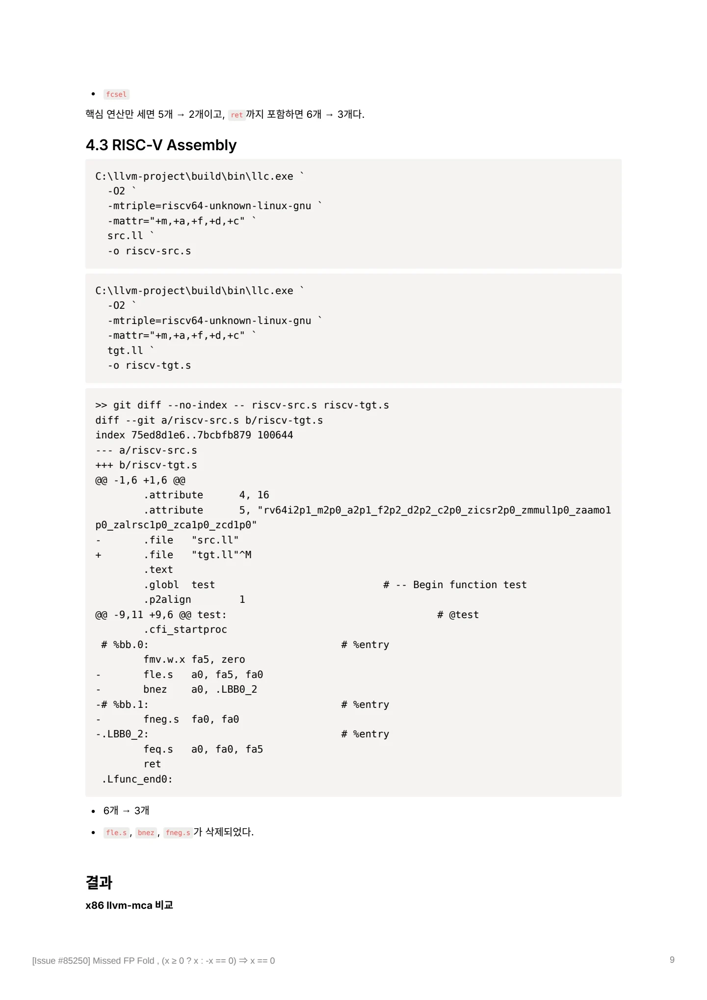
항목 최적화 전 최적화 후 변화 / 명령어 수 9 5 약 44% 감소 / uOps 12 7 약 42% 감소
항목 | 최적화 전 | 최적화 후 | 변화 |
|---|---|---|---|
명령어 수 | 9 | 5 | 약 44% 감소 |
uOps | 12 | 7 | 약 42% 감소 |
총 사이클 | 9011 | 3005 | 약 67% 감소 |
Block RThroughput | 3.0 | 1.8 | 약 40% 개선 |
IPC | 1.00 | 1.66 | 증가 |
가장 중요한 값은 Block RThroughput 3.0 → 1.8이다.
이 scheduling model에서는 같은 코드 블록을 반복 실행할 때 처리 간격이 약 3사이클에서 1.8사이클로 줄었다는 의미다.
또한 최적화 전에는 vbroadcastss가 메모리 로드를 발생시키고, vblendvps가 실행 포트를 사용한다. 최적화 후에는 이러한 instruction들이 제거되어 전체 실행 포트 압력도 감소한다.
따라서 x86에서는 단순히 instruction 수만 줄어든 것이 아니라 다음 효과가 있다.
0.0 상수 메모리 로드 제거
x 생성 제거
FP 조건 비교 제거
비교 결과를 이용한 blend 제거
uOp 수와 포트 사용량 감소
Target별 핵심 차이
Target | 최적화 전 절댓값 구현 | 제거되는 핵심 비용 |
|---|---|---|
x86 | XOR로 부호 반전 + SIMD 비교 + blend | 메모리 로드, 5 uOps, blend 포트 압력 |
AArch64 | | FP 연산 3개와 긴 데이터 의존성 |
RISCV | FP 비교 + 조건 분기 + fneg.s | 실제 branch와 잠재적인 분기 예측 실패 |
select (x >= 0), x, -x의 결과가 0인지 확인하는 연산을 원래 값 x == 0 비교로 단순화하였다.
x86에서는 상수 로드·부호 반전·비교·blend가 제거되어 llvm-mca 기준 Block RThroughput이 3.0에서 1.8로 감소했다.
AArch64에서는 fneg → fcmp → fcsel 의존성 사슬이 제거되었다.
RISCV에서는 fle.s → bnez → fneg.s 가 사라져 instruction 수뿐 아니라 조건 분기도 제거되었다.
실제 merged patch
패치 분석
lib/Transforms/InstCombine > InstCombineCompares.cpp
visitFCmpInst() 에 select 를 처리하는 코드를 추가했다.[Issue #85250] Missed FP Fold , (x ≥ 0 ? x : -x == 0) ⇒ x == 0 10
페이지 배치·기호·도식 확인하기

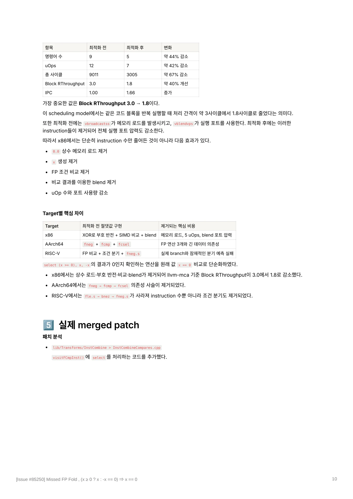
초기 PatternMatch / case Instruction::Select: / if ((Pred == FCmpInst::FCMP_UEQ || Pred == FCmpInst::FCMP_OEQ ||
초기 PatternMatch
case Instruction::Select:
if ((Pred == FCmpInst::FCMP_UEQ || Pred == FCmpInst::FCMP_OEQ ||
Pred == FCmpInst::FCMP_UNE || Pred == FCmpInst::FCMP_ONE) &&
match(LHSI,
m_Select(m_Value(), m_Value(X), m_FNeg(m_Value(Y)))) &&
X == Y && match(RHSC, m_AnyZeroFP()))
return new FCmpInst(Pred, X, RHSC);
break;matcher 해석
코드 | 의미 |
|---|---|
| 비교 대상이 select인지 확인 |
| select condition은 어떤 값이든 허용 |
| true arm의 값을 X 로 캡처 |
[Issue #85250] Missed FP Fold , (x ≥ 0 ? x : -x == 0) ⇒ x == 0 11

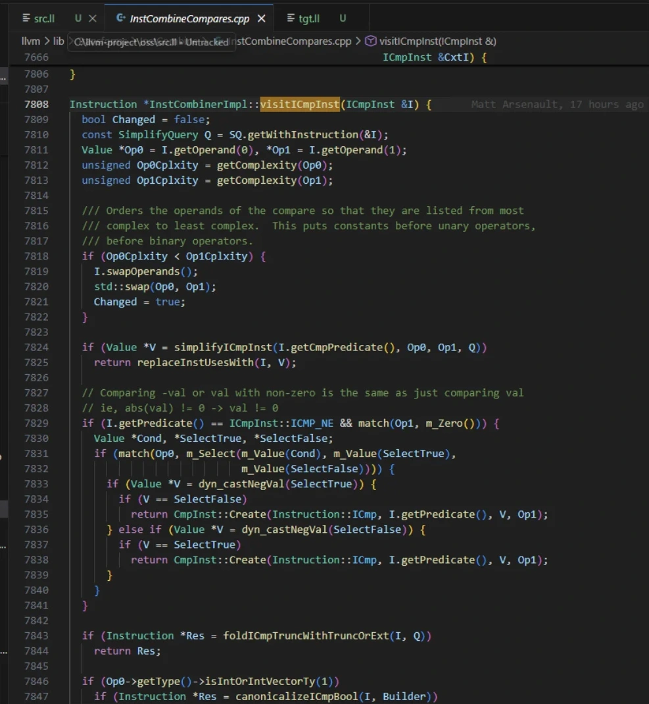
그림 안의 텍스트 · 문자 인식
# srcll
UX
G InstcombineCompares.cpp X
= tgtll u
llvm > lib >Cuvmi-projectlosslsrc. h Untracked nstCombineCompares.cpp > ④ visitiCmplnst(ICmplnst &)
7666
Icmpinst &cxtl) t
7806
}
7807
Instruction *InstcombinerImpl: :visiticmpInst(ICmpInst &I) {
7808
Matt Arsenault, 17 hours ago
7809
bool Changed = false;
7810
const Simplifyquery Q=SQ-getwithInstruction(&I);
7811
Value *0p0 = I.getoperand(8), *0p1 = I.getOperand(1);
7812
unsigned OpeCplxity = getComplexity(Ope);
7813
unsigned Op1Cplxity = getComplexity(0p1);
7814
/// Orders the operands of the compare so that they are listed from most
7815
This puts constants before unary operators,
7816
/// complex to least complex.
7817
/// before binary operators.
if (OpeCplxity < Op1cplxity) t
7818
7819
1.swapoperands();
7820
std::swap(0p8, 0p1);
Changed = true;
7821
7822
}
7823
7824
If (Value *V = 5implifyIcmpInst(I-getCmpPredicate(), Op8, Op1, 2))
7825
return replaceInstuseswith(I, V);
7826
7827
// Comparing -val or val with non-zero is the same as just comparing Val
7828
// le, abs(val) != 0 -> val != 0
7829
if (I.getpredicate() == ICmpInst: :ICMP_NE && match(Op1, m_Zero())) {
7830
Value *Cond, *SelectTrue, *SelectFalse;
7831
I+ (match(Ope, m_Select(m_Value(Cond), m_Value(SelectTrue),
7832
m_Value(SelectFalse)))) {
7833
if (Value *v = dyn_castNegVal(SelectTrue)) {
7834
if (V == SelectFalse)
7835
return CmpInst::Create(Instruction::Icmp, I.getpredicate(), V, Op1);
7836
J else if (Value *v = dyn_castNegVal(SelectFalse)){
7837
if (V== SelectTrue)
7838
return CmpInst::Create(Instruction::Icmp, I.getpredicate(), V, Op1);
7839
7840
7841
7842
7843
if (Instruction *Res = foldIcmpTruncwithTrunconExt(I, Q)
7844
return Res;
7845
7846
I+(Ope->getType()->15IntorintvectorTy(1))
if (Instruction *Res = canonicalizeIcmpBoo1(I, Builder))
7847이미지에서 읽은 문자입니다. 코드 기호는 그림에서 확인하세요.
페이지 배치·기호·도식 확인하기

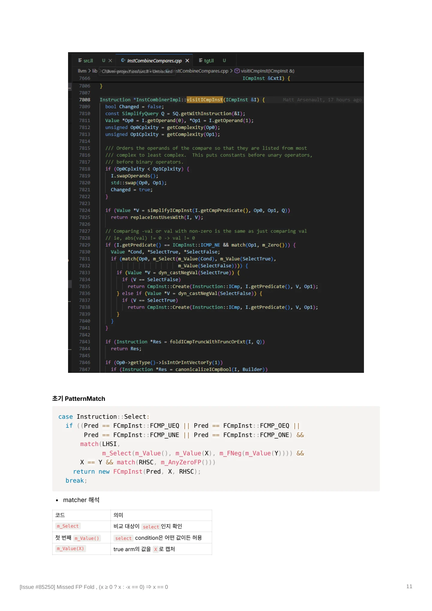
m_FNeg(m_Value(Y)) false arm이 -Y 인지 확인 / X == Y 결국 X 와 -X 를 선택하는 구조인지 확인 / m_AnyZeroFP() 비교 대상이 floating-point
| false arm이 -Y 인지 확인 |
|---|---|
| 결국 X와 -X를 선택하는 구조인지 확인 |
| 비교 대상이 floating-point zero인지 확인 |
초기 변환 방식 초기 구현은 새로운 FCmpInst를 생성했다.
return new FCmpInst(Pred, X, RHSC);변환 전:
%res = fcmp ueq float %sel, 0.0변환 후:
%res = fcmp ueq float %x, 0.0비교의 왼쪽 피연산자를 %sel에서 %x로 교체한 새로운 fcmp instruction을 생성하는 방식이다.
리뷰에서 발견된 문제 리뷰어는 새로운 FCmpInst를 생성하면 기존 fcmp instruction에 붙어 있던 정보가 사라질 수 있다고 지적했다.
Fast-Math Flags
기존 instruction 이름
기존 instruction에 연결된 일부 메타데이터 또는 위치 정보
리뷰 링크:
https://github.com/llvm/llvm-project/pull/85673/files#diff- 45d9bc48ca662c4f70ef6d841aeef9f8cf5465414b844562e41e237888b60d8c
해결법 기존 instruction을 유지하고 첫 번째 operand만 변경하도록 수정했다.
return replaceOperand(I, 0, X);즉 새 fcmp를 만드는 대신 기존 fcmp의 첫 번째 operand만 %sel에서 %x로 교체한다.
이 방식은 기존 fcmp에 설정된 속성을 보존할 수 있다는 장점이 있다.
관련 commit:
https://github.com/llvm/llvm-project/pull/85673/commits/00973c3b4fe40f06344b672efe80b009f70c74ac
테스트 패치
llvm/test/Transforms/InstCombine/fcmp.ll 에 존재[Issue #85250] Missed FP Fold , (x ≥ 0 ? x : -x == 0) ⇒ x == 0 12
페이지 배치·기호·도식 확인하기

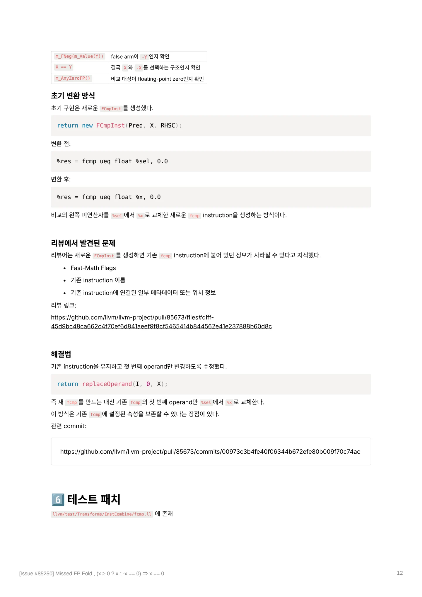
기본 테스트 / define i1 @fcmp_ueq_sel_x_negx(float %x) { / ; CHECK-LABEL: @fcmp_ueq_sel_x_negx(
기본 테스트
define i1 @fcmp_ueq_sel_x_negx(float %x) {
; CHECK-LABEL: @fcmp_ueq_sel_x_negx(
; CHECK-NEXT: [[RES:%.*]] = fcmp ueq float [[X:%.*]], 0.000000e+00
; CHECK-NEXT: ret i1 [[RES]]
;
%f = fcmp ueq float %x, 0.000000e+00
%neg = fneg fast float %x
%sel = select i1 %f, float %x, float %neg
%res = fcmp ueq float %sel, 0.000000e+00
ret i1 %res
}위의 test는 InstCombine 최적화 후의 결과 IR이 CHECK에 적힌 형태와 일치하는지 검사하는 테스트다
fcmp → fneg → select → fcmp 형태의 IR이 InstCombine 이후 fcmp x, 0 형태로 최적화되는지 검사한다.
; CHECK-NEXT: [[RES:%.*]] = fcmp ueq float [[X:%.*]], 0.000000e+00
; CHECK-NEXT: ret i1 [[RES]]즉, %sel에 대한 비교가 %x에 대한 직접 비교로 바뀌었는지 확인한다.
[Issue #85250] Missed FP Fold , (x ≥ 0 ? x : -x == 0) ⇒ x == 0 13

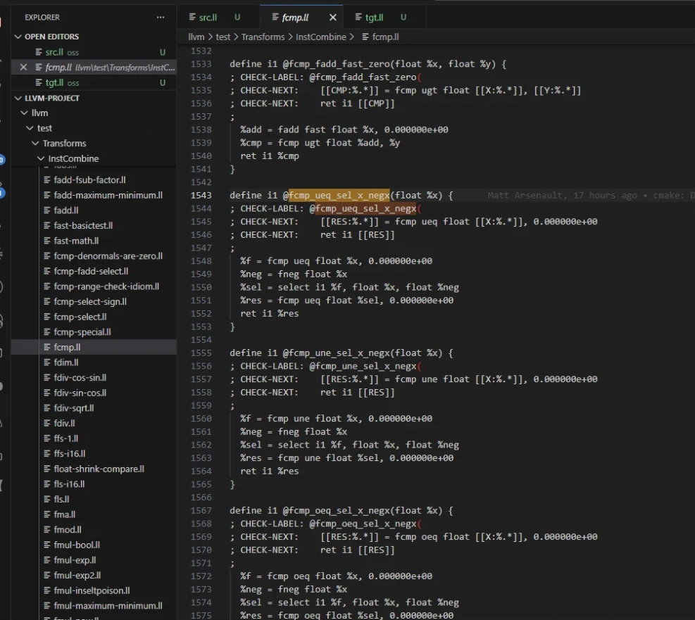
그림 안의 텍스트 · 문자 인식
Etgtlu
EXPLORER
E STCIl
u
= fcmpll
×
✓ OPEN EDITORS
livm > test > Transforms > InstCombine〉 폼 fcmpll
= srcll oss
1532
X = fcmp.ll ltvmlte
define i1 @fcmp_fadd_fast_zero(float %x, float %y) {
; CHECK-LABEL: Gfcmp_fadd_fast_zero(
= tgt.ll oss
[[CMP:%.*]] - fcmp ugt float [[X:%.*]],[[Y:%.*]]
1535
; CHECK-NEXT:
✓ LLVM-PROJECT
1536
; CHECK-NEXT:
ret i1 [[CnP]]
~ 1lhvm
1537
✓ test
1538
nadd = fadd fast float %x, 8.000000e+00
~ Transforms
1539
%cmp = fcmp ugt float %add, %)
1540
ret i1 %cmp
✓ InstCombine
1541
E fadd-fsub-factor.ll
1542
= fadd-maximum-minimum.Jl
1543
define i1 @fcmp_ueq_sel_x_negx(float %x) {
Matt Arsenault, 17 hours ago • Cmake:
= fadd.ll
; CHECK-LABEL: efcmp_ueq_sel_x_negx(
= fast-basictest.ll
1545
CHECK-NEXT:
[[RES:%.*]] = fcmp ueq float [[X:%.*]], 0.000000e+00
1546
; CHECK-NEXT:
ret i1 [[RES]]
= fast-math.ll
= fcmp-denormals-are-zeroll
1548
%f = femp ueq float %x, 0.000000e+08
= fcmp-fadd-select.Jl||
Nneg = fneg float %x
1549
= fcmp-range-check-idiom.l
1550
%sel - select i1 %f, float %x, float 8neg
Nres - fcmp ueq float %sel, 0.0000002108
= fcmp-select-sign.l
1551
1552
ret i1 %res
E fcmp-selectJl
E fcmp-special.ll
1554
= fcmp.ll
1555
define i1 efcmp_une_sel_x_negx(float 8x) {
= fdim.ll
1556
; CHECK-LABEL: @fcmp_une_sel_x_negx/
= fdiv-cos-sin_ll
1557
•CECK-NSXS
[[RES:%.*1] - fcmp une float [[X:%.*1], 0.000000e+08
= fdiv-sin-cos.ll
1558
CHECK-NEXT:
ret 11 [[RES]]
F fdiv-sqrtJl
1559
%f - fcmp une float %x, 0.000000e+00
= fdvv.II
Nneg - fneg float sx
1561
E fts-1.l|
1562
%sel - select 11 %f, float xx, float xneg
= ffs-i16.11
&res - fcmp une float %sel, 0.000000e+06
1563
= float-shrink-compare.ll|
ret i1 %res
E fls-i161|
E flsll
define 11 efcmp_oeq_sel_x_negx(float &x) {
를 ima.ll
1568
; CHECK-LABEL: @fcmp_oeq_sel_x_negx
등 fmod.ll
1569
; CHECK-NEXT:
[[RES:%.*1] - fcmp oeq float [[X:%.*]], 0.000000e+00
= fmul-bool.il
1570
CHECK-NEXT:
ret i1 [[RES]]
E fmul-exp:ll
1571
E fmul-exp2.!
1572
%f - fcmp oeq float Xx, 0.000000e+00
= fmul-inseltpoison.ll
%neg - fneg float %x
= fmul-maximum-minimum.ll
1574
%sel - select 11 %f, float xx, float xneg
&res-fcmp oeq float %sel, 0.000000e+80이미지에서 읽은 문자입니다. 코드 기호는 그림에서 확인하세요.
페이지 배치·기호·도식 확인하기

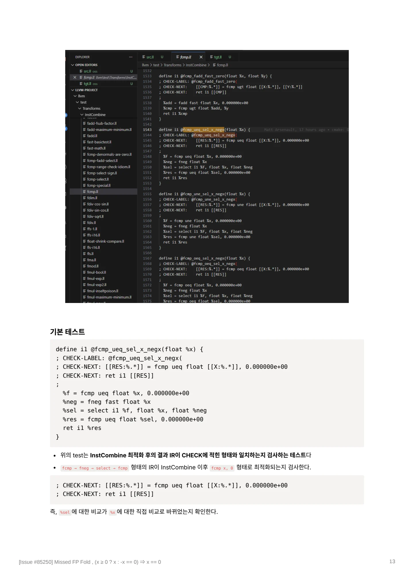
predicate별 테스트 / 패치에서는 다음 네 predicate ( ueq , une , oeq , one 를 각각 테스트했다. / 각 테스트는 동일한 형태를 가지며, predicate만 달라진
predicate별 테스트
패치에서는 다음 네 predicate ( ueq , une , oeq , one 를 각각 테스트했다.
각 테스트는 동일한 형태를 가지며, predicate만 달라진다. fcmp ueq , fcmp une , fcmp oeq , fcmp one
EX une 테스트는 다음 변환을 검증
%res = fcmp une float %sel, 0.0→
%res = fcmp une float %x, 0.scalar와 vector 테스트
패치는 scalar float 뿐 아니라 <8 x float> vector도 테스트했다.
이를 통해 PatternMatch 코드가 scalar에만 우연히 동작하는 것이 아니라 vector type에도 정상적으로 적용되는지 검증한 다.
EX) scalar
define i1 @fcmp_ueq_sel_x_negx(float %x)EX) vector
define <8 x i1> @fcmp_ueq_sel_x_negx_vec(<8 x float> %x)vector에서는 zero를 zeroinitializer 라고 표현한다. 예상 결과도 vector 비교이다.
이를 통해 PatternMatch 코드가 scalar에만 우연히 동작하는 것이 아니라 vector type에도 정상적으로 적용되는지 검증했다.
select 조건은 중요하지 않다는 테스트
[Issue #85250] Missed FP Fold , (x ≥ 0 ? x : -x == 0) ⇒ x == 0 14

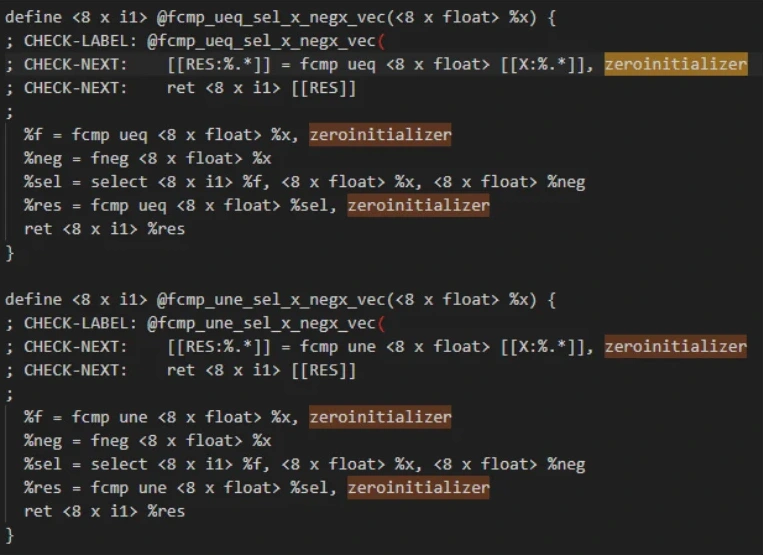
그림 안의 텍스트 · 문자 인식
define <8 x 11> @fcmp_ueq_sel_x_negx_vec(<8 x float》 %x) {
: CHECK-LABEL: @tcmp_ueq_sel_x_negx_vec(
; CHECK-NEXT:
[[RES:%.*1] = fcmp veq <8 x float》 [[X:%.*]], zeroinitializer
ret <8 × i1> [[RES]]
; CHECK-NEXT:
%f - fcmp ueq <8 × float》 %x, Zeroinitlalizer
%neg = fneg <8 x float> %x
%sel = select <8 x i1> %f, <8 x float> %x, <8 x float> %neg
%res = fcmp ueq <8 x float> %sel, zeroinitializer
ret <8 × i1> %res
define <8 x i1> @fcmp_une_sel_x_negx_vec(<8 x float> %x) {
; CHECK-LABEL: @fcmp_une_sel_x_negx_vec(
• CHECK-NEXT:
[[RES:%.*1] = fcmp une <8 x float》 [[X:%.*]], zeroinitializer
ret <8 x i1> [[RES]]
: CHECK-NEXT:
%f = fcmp une <8 × float〉 %x, Zeroinitlalizer
%neg = fneg <8 x float》 %x
%sel = select <8 x 11> %f, <8 x float> %x, <8 x float> %neg
%res = fcmp une <8 x float> %sel, zeroinitializer
ret <8 × i1> %res이미지에서 읽은 문자입니다. 코드 기호는 그림에서 확인하세요.
페이지 배치·기호·도식 확인하기

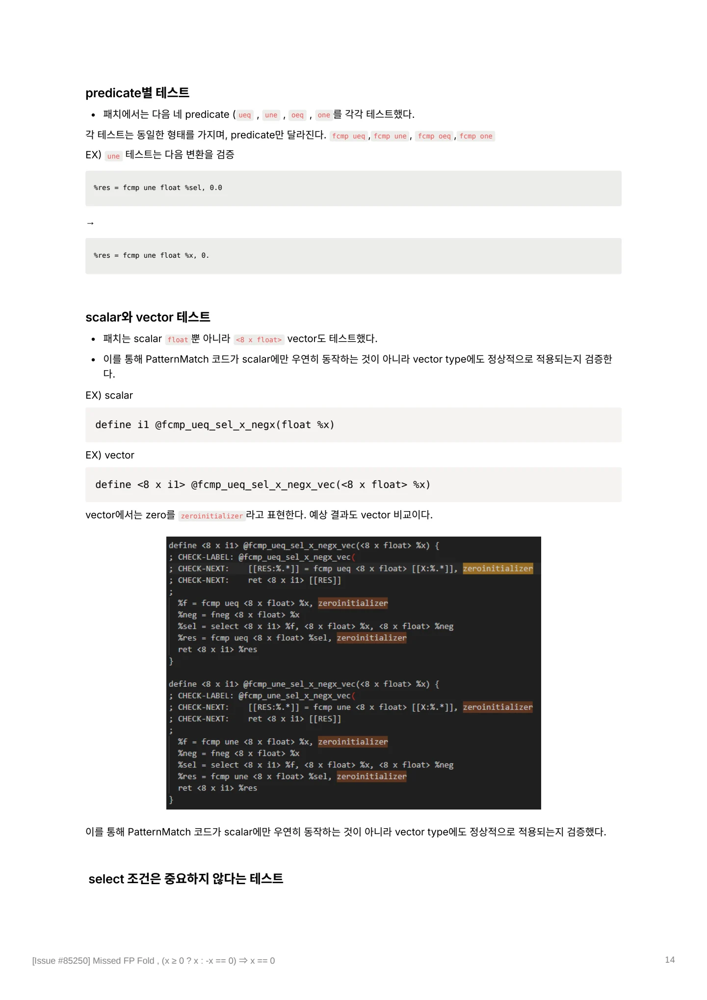
define i1 @fcmp_sel_x_negx_with_any_cond(float %x, i1 %c) { / %neg = fneg float %x / %sel = select i1 %c, floa
define i1 @fcmp_sel_x_negx_with_any_cond(float %x, i1 %c) {
%neg = fneg float %x
%sel = select i1 %c, float %x, float %neg
%res = fcmp ueq float %sel, 0.000000e+00
ret i1 %res
}select 조건 %c가 %x >= 0 같은 비교 결과가 아니라, 외부에서 전달된 임의의 boolean이라는 것.
이 테스트의 의미는 이 최적화가 (x >= 0) ? x : -x 와 같은 형태에만 한정되지 않는다는 것이 아니라 어떤 조건이든 cond ? x : - x 라는 것이다.
즉! 둘 중 어느 값이 선택되더라도 zero 여부는 동일하므로 조건 자체는 분석할 필요가 없다.
구현 코드에서도 조건 부분을 다음과 같이 단순히 m_Value()로 처리한다.
m_Select(m_Value(), ...)✅ select condition의 구조를 제한하지 않는다.
0.0 테스트 추가
리뷰 과정에서 -0에 대한 테스트를 추가하라는 요청이 있었다.
https://github.com/llvm/llvm-project/pull/85673/commits/a5d953d73104af724a2508544b19b78b7bc33811
IEEE 부동소수점에는 다음 +0.0 -0.0 두 가지 zero가 존재한다.
→ 두 값은 일반적인 equality 비교에서는 같다고 판단되지만, 비트 표현과 일부 연산에서는 구분될 수 있다.
특히 이 최적화는 x와 -x를 다루기 때문에 signed zero를 반드시 검증해야 한다.
denormal (0에 아주 가까운 수 ) 설정 테스트
🤔 denormal?
💡
LLVM에는 함수마다
attributes #0 = {
"denormal-fp-math"="dynamic,dynamic"
}같은 속성을 붙일 수 있다. 이건 쉽게 말하면
이 함수는 denormal을 어떻게 처리할지 지정하는 옵션
이다. 예를 들어 CPU마다
denormal을 그대로 계산할 수도 있고
0으로 처리할 수도 있고(Flush-To-Zero)
동작이 조금 다를 수 있다.
[Issue #85250] Missed FP Fold , (x ≥ 0 ? x : -x == 0) ⇒ x == 0 15
페이지 배치·기호·도식 확인하기

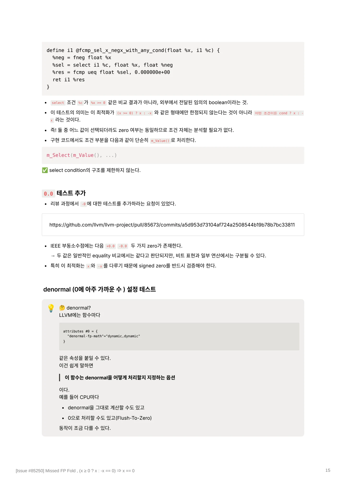
리뷰에서는 denormal-fp-math="dynamic,dynamic" 와 같은 attribute 설정에 대한 테스트도 요구했다. / attribute를 붙였을 때 출력이 달라지는 것을 기대한 것
리뷰에서는 denormal-fp-math="dynamic,dynamic" 와 같은 attribute 설정에 대한 테스트도 요구했다.
attribute를 붙였을 때 출력이 달라지는 것을 기대한 것이 아니다.
denormal 처리 설정이 달라져도 이 변환이 여전히 안전하다는 것을 테스트로 명시하라는 의미였다.
리뷰어는 결과가 달라지지 않는 것이 정상이며, 잘못된 변환이라면 Alive2가 위반을 잡아낼 것이라고 설명했다.
Fast-Math Flags 테스트
리뷰 과정에서 FMF 테스트를 추가하라는 요청도 있었다.
https://github.com/llvm/llvm-project/pull/85673/commits/e62038edbc6bb6c8d74e60814a42e8f5020a052 a
https://github.com/llvm/llvm-project/pull/85673/commits/785fe715a9344e7facebb00dc67b10631a84a542
FMF는 Fast-Math Flags의 약자로, 부동소수점 연산에 nnan, ninf, nsz, reassoc, contract, afn, fast 과 같은 추가 가정을 허용한다.
이 PR에서는 기존 fcmp instruction을 새 instruction으로 교체할 경우 FMF가 손실될 가능성이 있었다.
따라서 테스트에서는 다음을 검증해야 했다.
최적화 자체가 FMF가 있는 경우에도 적용되는가
최적화 후 기존 fcmp의 FMF가 유지되는가
nnan, ninf 등의 flag 조합에서 의미가 달라지지 않는가
[Issue #85250] Missed FP Fold , (x ≥ 0 ? x : -x == 0) ⇒ x == 0 16
페이지 배치·기호·도식 확인하기

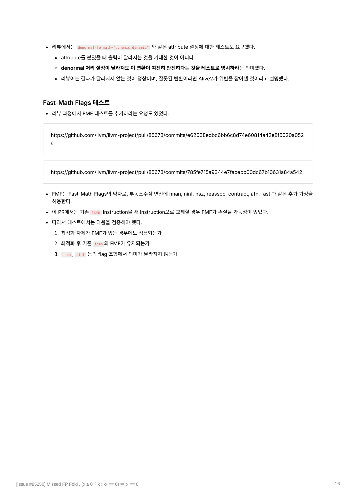
핵심 원리와 편집 주석
변환의 범위
x와 -x는 equality 관점에서 0 여부가 같다. 따라서 둘 중 하나를 선택한 결과를 0과 비교할 때 선택을 생략할 수 있다.
fcmp eq (select cond, x, -x), 0
↓
fcmp eq x, 0실제 패치는 ueq, une, oeq, one을 다룬다. 위의 eq는 구조 설명용이다. ordered·unordered 의미는 원래 predicate대로 유지한다.
기존 명령어의 속성 보존
초안은 새 FCmpInst를 만들었다. 리뷰에서는 기존 fast-math flags 등 명령어의 속성을 잃지 않도록 기존 비교의 피연산자만 바꾸는 방향을 제시했다.
return replaceOperand(I, 0, X);select 조건은 x의 부호 검사일 필요가 없다. 어느 값이 선택되어도 0 비교의 결론이 같다는 것이 근거다.
검증 범위
- 네 가지 equality predicate를 각각 확인한다.
- scalar와 vector를 확인한다.
- 임의의 select 조건을 확인한다.
- +0과 -0을 확인한다.
- denormal 처리 속성과 fast-math flags 보존을 확인한다.
작성자는 Alive2와 여러 타깃의 기계어를 비교했다. 기존 패치의 작은 코드 변경과 별개로 검증 표면은 넓다.
자료에 기록된 성능 관찰
| 관찰 | 변환 전 | 변환 후 |
|---|---|---|
| x86 llvm-mca 명령어/반복 | 9 | 5 |
| x86 Block RThroughput | 3.0 | 1.8 |
| AArch64: ret 포함 명령어 | 6 | 3 |
| RISC-V: 예제 명령어 | 6 | 3 |
문서 전문과 버전
- PDFPDF 원자료 · 16쪽Issue85250_.pdf
각 자료는 별도의 버전입니다. 같은 주제라도 구현 상태·설명 범위·수치가 다를 수 있습니다.
관련 이슈와 PR
구현·병합 상태와 측정값은 해당 제출 자료의 작성 시점 기준입니다.